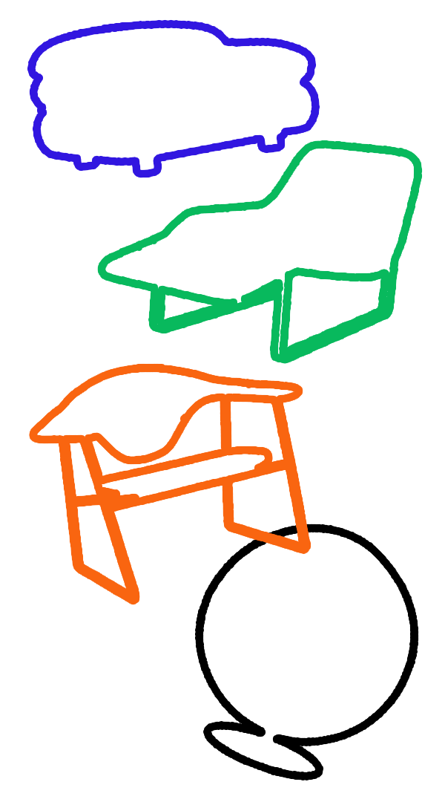

Through technological development, it has become easier for personal information to be tracked by machines and companies through online data. Together with the advancement of virtual assistance, the technology is able to utilise the data to cater and manipulate experiences specifically for the users, making personalisation an even more relevant and impactful tool. In a dystopian future, this overuse of personalisation, the ease of access and convenience provided by technology will lead to the further complacency in human behaviors.
This website provides a simulation of the human experience when browsing an online shopping website, in a future timeline when humanity’s free will is manipulated by technology. The user who is browsing the website is provided with choices and personalised experiences based on their personal information and preferences.
This website provides a simulation of the human experience when browsing an online shopping website, in a future timeline when humanity’s free will is manipulated by technology. The user who is browsing the website is provided with choices and personalised experiences based on their personal information and preferences.
